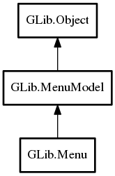

Menu
Object Hierarchy:

Description:
public class Menu :
MenuModel
Menu is a simple implementation of MenuModel.
You populate a Menu by adding MenuItem instances to it.
There are some convenience functions to allow you to directly add items (avoiding MenuItem
) for the common cases. To add a regular item, use insert. To add a section, use
insert_section. To add a submenu, use
insert_submenu.
Content:
Constants:
Creation methods:
- public Menu ()
Creates a new Menu.
Methods:
- public void append (string? label, string? detailed_action)
Convenience function for appending a normal menu item to the end of
this.
- public void append_item (MenuItem item)
Appends item to the end of
this.
- public void append_section (string? label, MenuModel section)
Convenience function for appending a section menu item to the end of
this.
- public void append_submenu (string? label, MenuModel submenu)
Convenience function for appending a submenu menu item to the end of
this.
- public void freeze ()
Marks this as frozen.
- public void insert (int position, string? label, string? detailed_action)
Convenience function for inserting a normal menu item into
this.
- public void insert_item (int position, MenuItem item)
Inserts item into this.
- public void insert_section (int position, string? label, MenuModel section)
Convenience function for inserting a section menu item into
this.
- public void insert_submenu (int position, string? label, MenuModel submenu)
Convenience function for inserting a submenu menu item into
this.
- public void prepend (string? label, string? detailed_action)
Convenience function for prepending a normal menu item to the start of
this.
- public void prepend_item (MenuItem item)
Prepends item to the start of
this.
- public void prepend_section (string? label, MenuModel section)
Convenience function for prepending a section menu item to the start
of this.
- public void prepend_submenu (string? label, MenuModel submenu)
Convenience function for prepending a submenu menu item to the start
of this.
- public void remove (int position)
Removes an item from the menu.
- public void remove_all ()
Removes all items in the menu.
Inherited Members:
All known members inherited from class GLib.MenuModel
All known members inherited from class GLib.Object